RMUL2025 Ambition复盘总结
| 赛事总况 |
在刚刚结束的25赛季高校联盟赛中，Ambition战队共进行三场3V3对抗赛，分别是：
沈阳理工大学vs大连大学 0:2
沈阳理工大学vs辽宁科技大学 1:1
沈阳理工大学vs哈尔滨理工大学 2:0
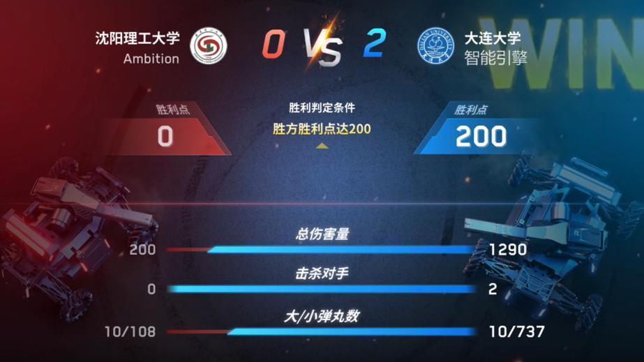
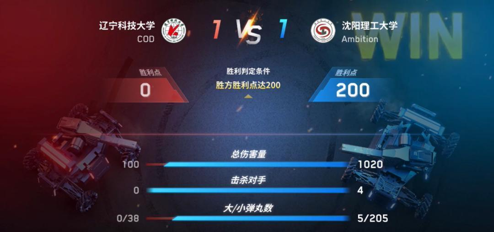
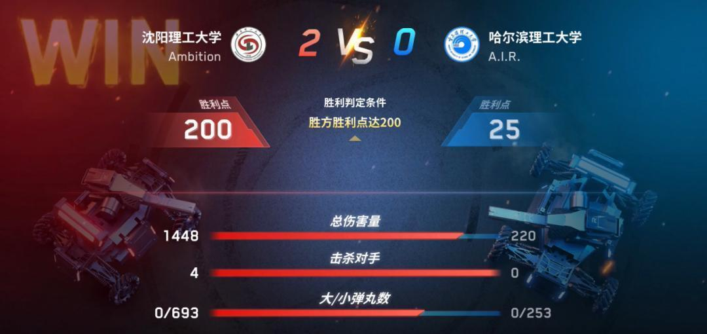
| 对局复盘 |
第一局
在第一场对战大连大学智能引擎战队时，由于经验不足、战术模糊等问题导致我们首战失利，针对暴露出的问题，队员连夜进行了复盘与及时的改进。
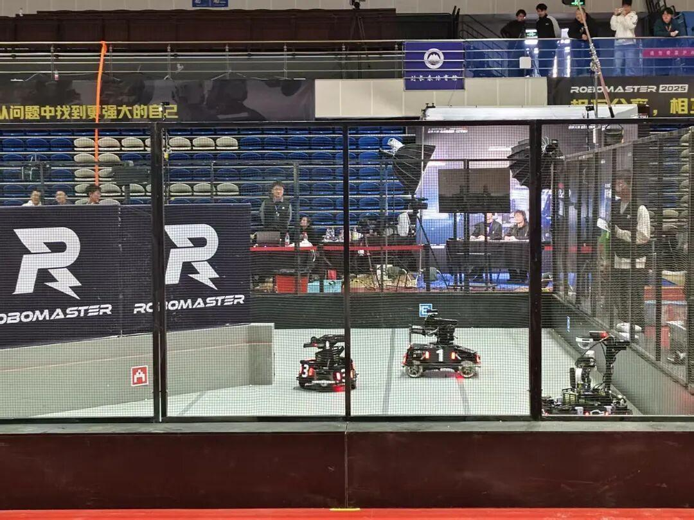
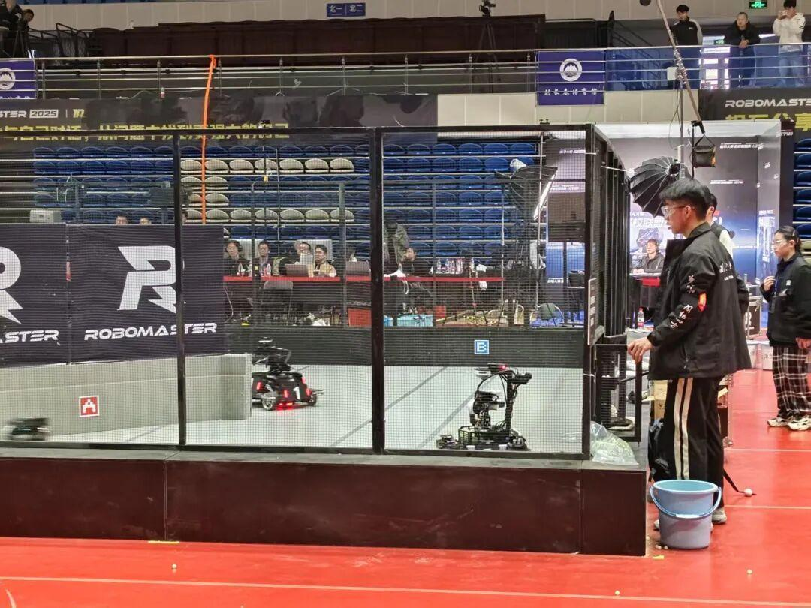
第二局
在第二场对战辽宁科技大学COD战队时，我们根据前一场比赛，总结经验教训，虽然在第一局中也出现了卡弹等问题，失去第一局的分数。但我们及时调整，最终拿下第二局，和COD战队1比1平。
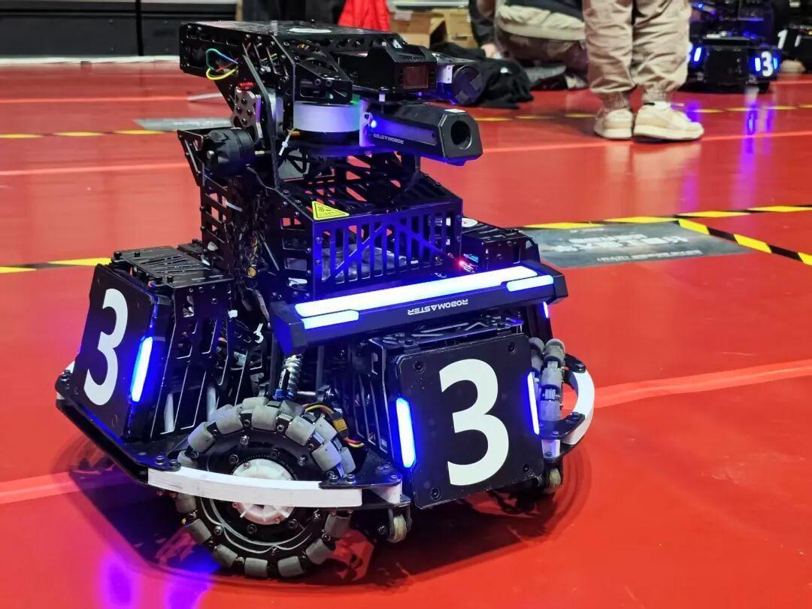
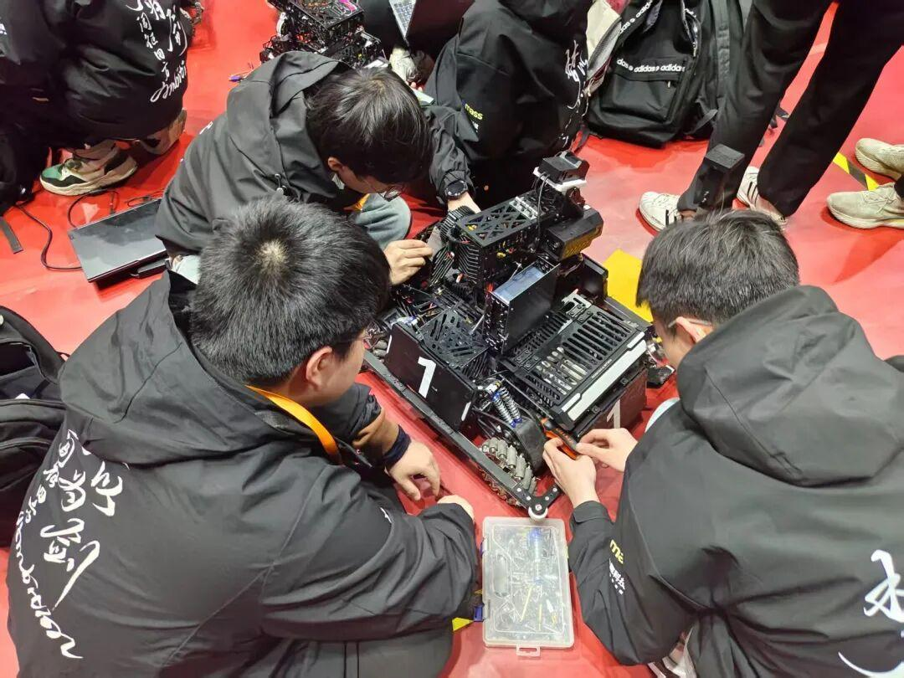
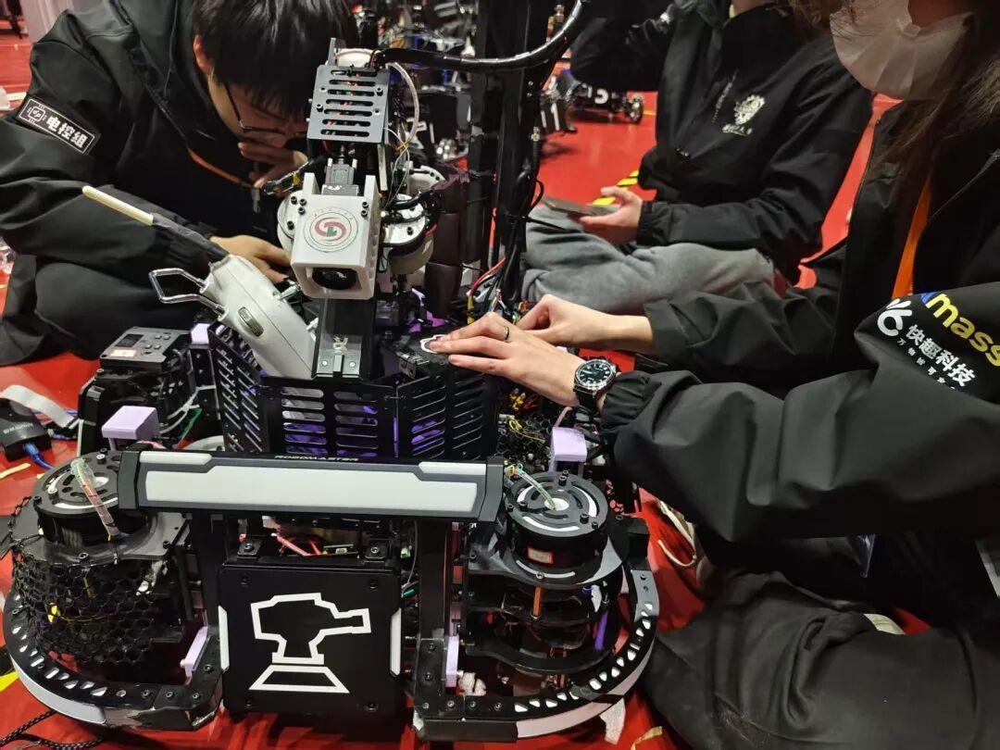
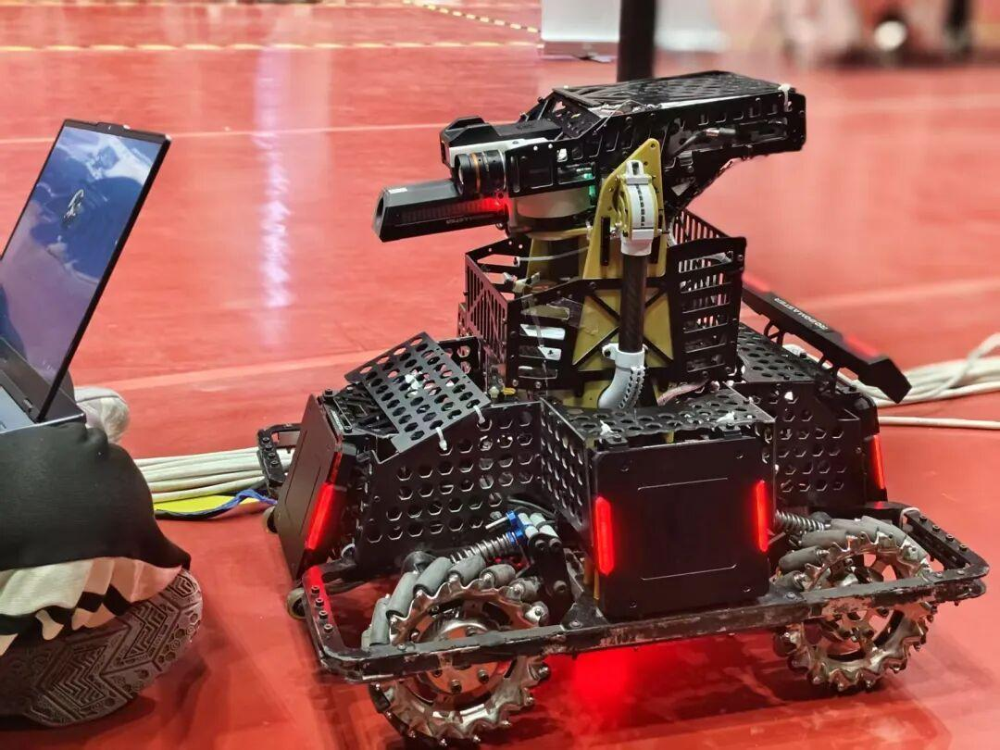
第三局
而第三场与哈尔滨理工大学A.I.R.战队的比赛，三辆车之间互相配合，操作手出色发挥，拿下四杀，最终2比0赢得比赛。
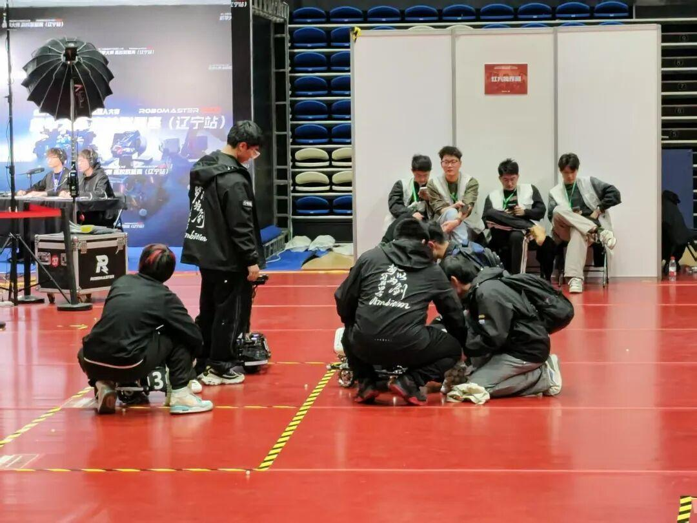
| 总结 |
尽管这次比赛未能达到预期目标，但是在比赛过程中，我们发现了机器人存在的问题以及作战方案上的缺陷，并从其他战队身上学到了很多，这次比赛仍是一次宝贵的经历。接下来，我们将根据这次比赛做出针对性调整，改进不足，期待在未来赛事中有所突破！
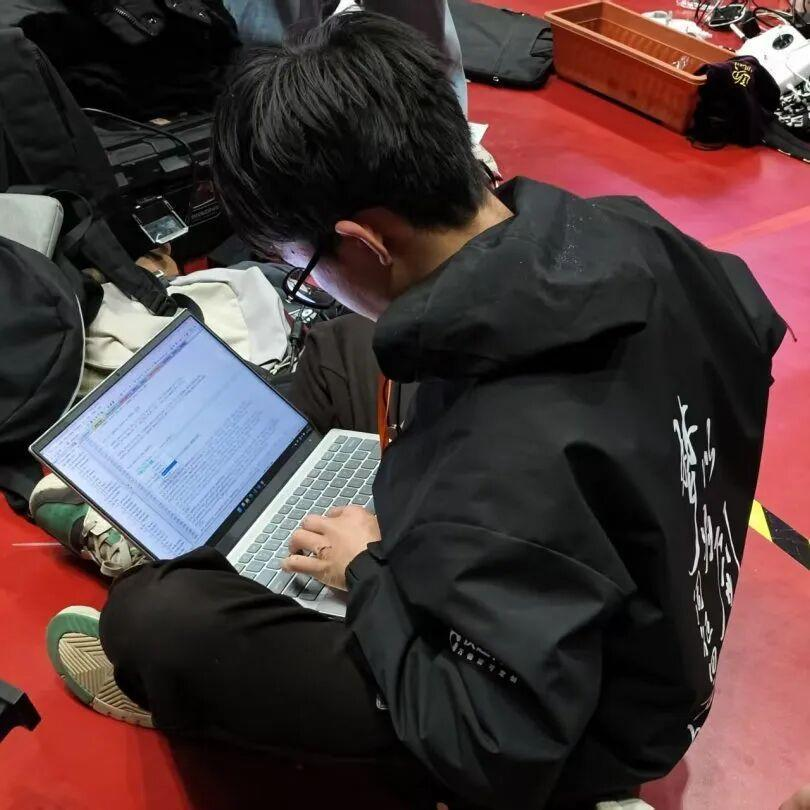
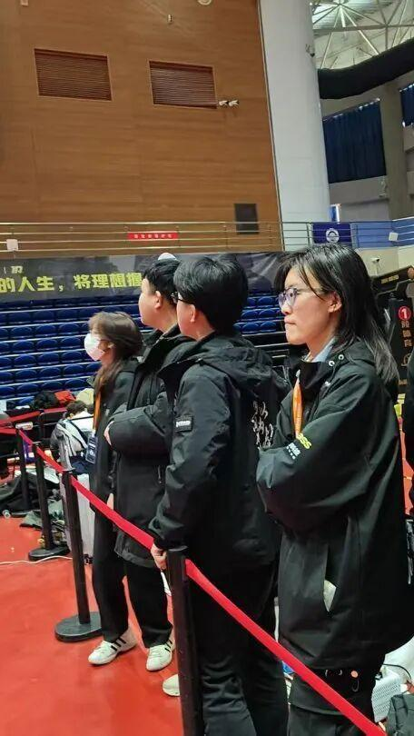
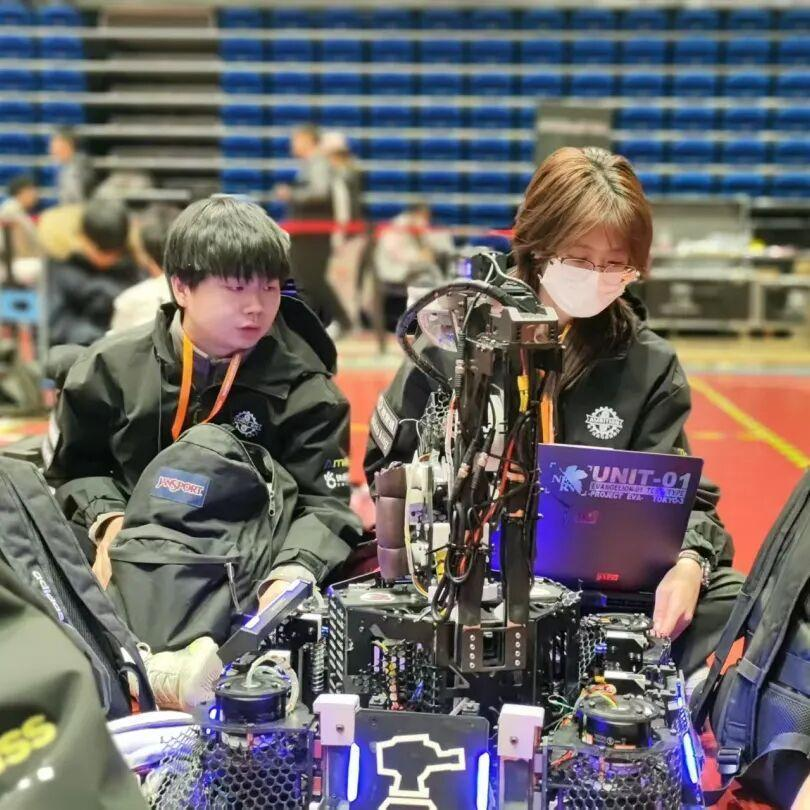
当最后一个零件归位，当赛场灯光渐暗
我们迎来的不是终点
而是Ambition战队的新起点
下一场战役，我们将带着
淬火的代码与冲锋的决心
在钢铁碰撞的火花中
重构新的可能
-END-
推文|青唐三月
图片|Ambition战队运营组
审核|XX敏